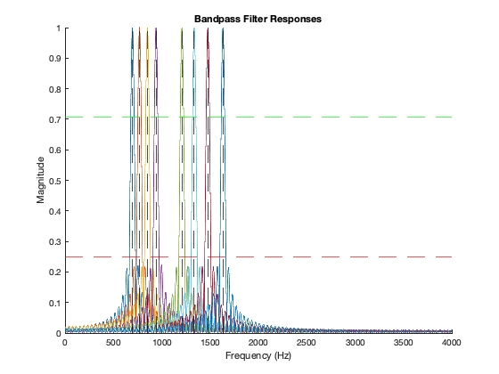

DTMF Decoding
This script demonstrates the bandpass filters are correct. The rest of the lab handout is implemented in the corresponding functions found in the folder final_code. This lab did not lend itself well to being organized in the main.m script. Everything is contained in the functions specified by the lab. Demo.m invokes dtmfrun and shows that everything works properly. Michael Keyser, Jason Howard, Shaun McKellar
% center frequenices of each dial tone fb = [697, 770, 852, 941, 1209, 1336, 1477, 1633]; % I changed this value multiple times as specified by the lab handout. % Increasing L made the filter "skinner." Increasing L to 200 resulted in % the bandpass filters being below the stopband when overlapping as % specified in the lab handout. L = 200; % this is the optimal L for fs = 8000; fs = 8000; % create bandpass filters hh = dtmfdesign(fb, L, fs); % define constants for plotting w = (0:1/fs:pi); f = (w / (2* pi)) * fs; figure hold on % plot the center frequencies for i = 1:length(fb) xline(fb(i), '--k') end % plot the passband and cutoff horizontal lines yline(1/sqrt(2), '--g') yline(0.25, '--r') % plot the bandpass filter frequency responses for i = 1:length(fb) h = hh(:,i); H = abs(freqz(h, 1, w)); plot(f, H); end title('Bandpass Filter Responses') xlabel('Frequency (Hz)') ylabel('Magnitude')